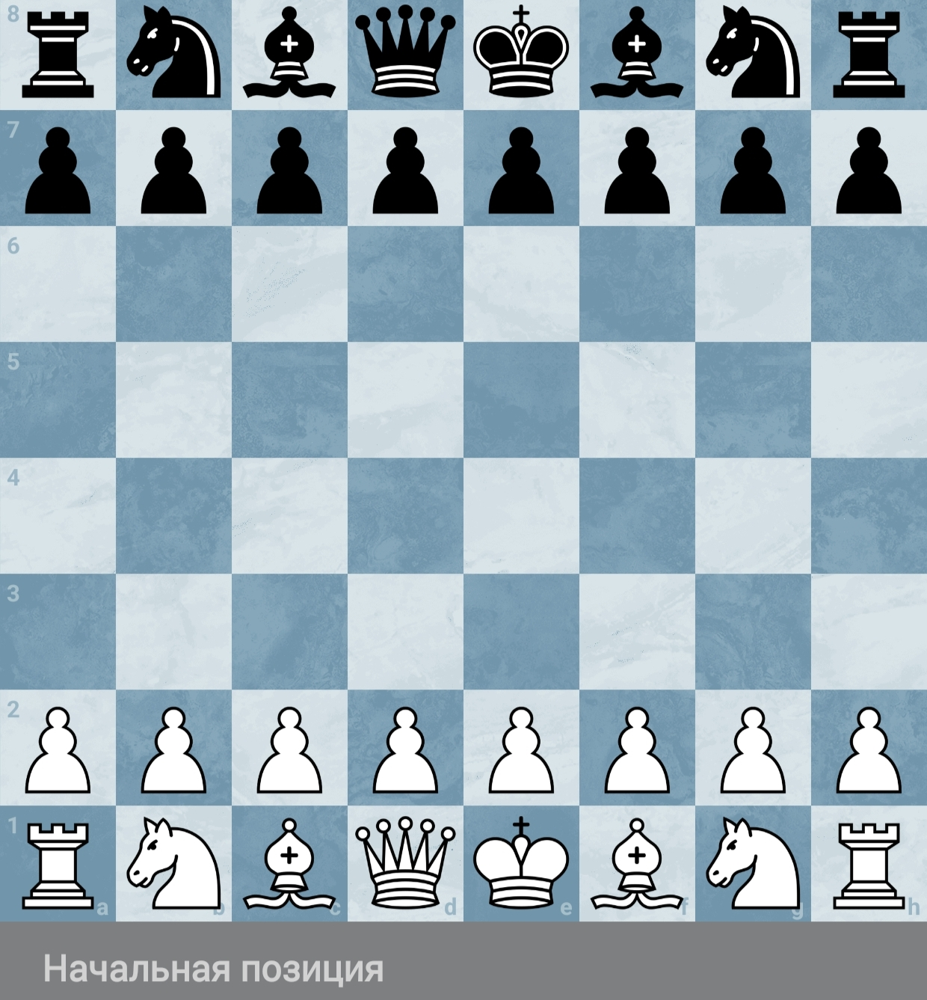
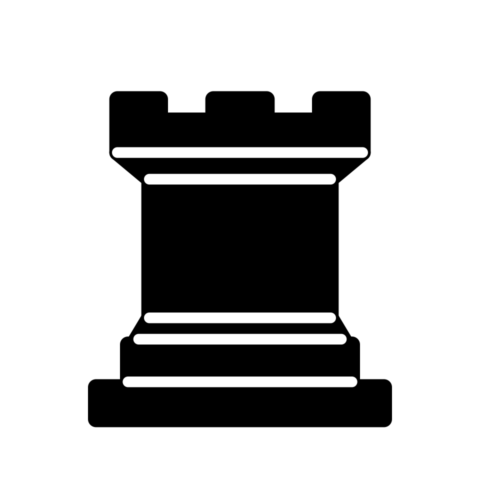
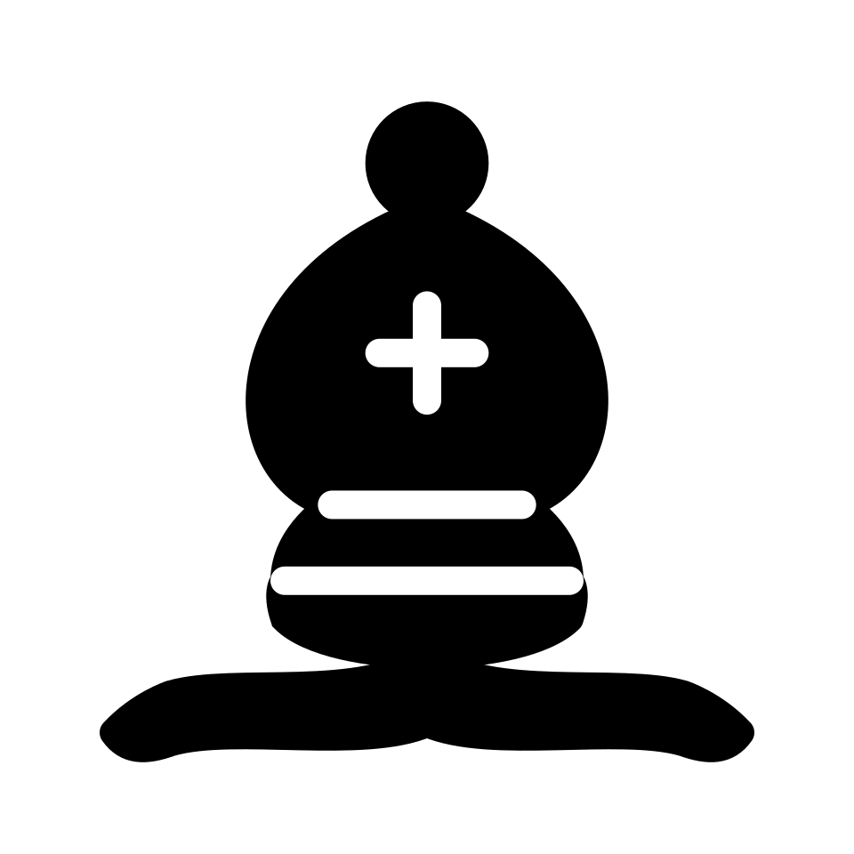
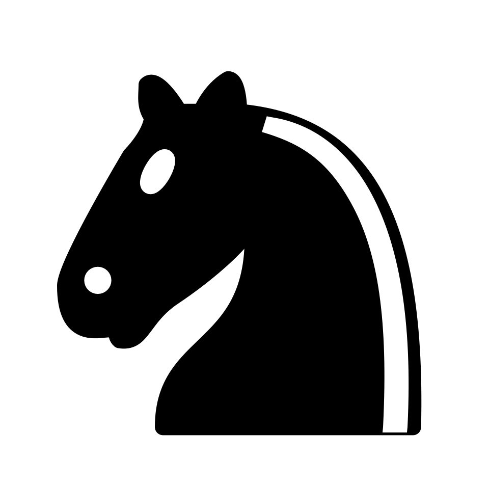
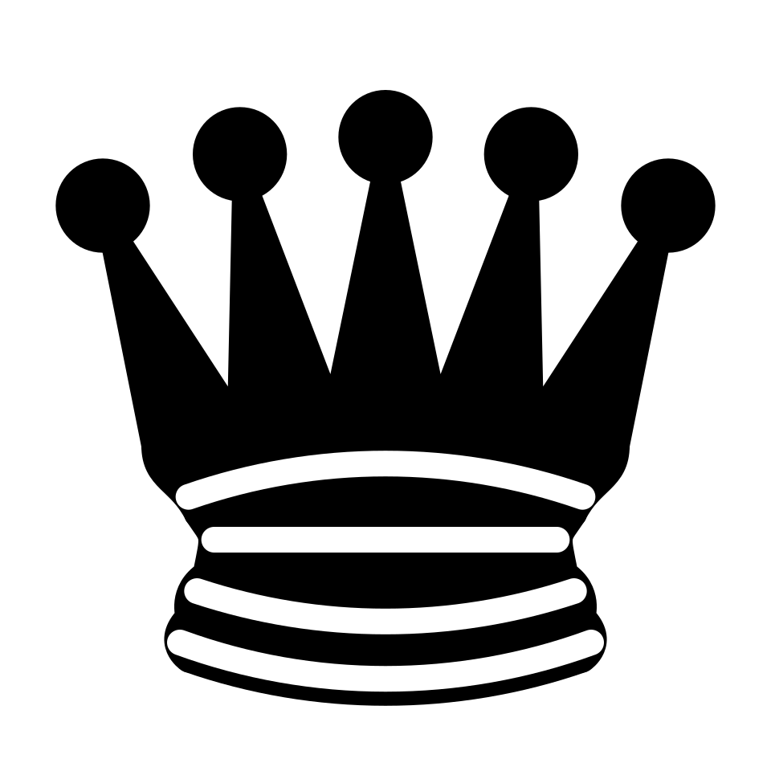

Всё о шахматах
Победа достается тому,
кто сделал ошибку предпоследним.
Савелий Тартаковер

Когда же возникли шахматы?
В середине XIX века возникает система международных соревнований, сначала — в виде матчей между сильнейшими шахматистами разных городов и стран, со второй половины столетия — также и в виде международных турниров (конгрессов). В 1886 году Вильгельм Стейниц победил Иоганна Цукерторта в матче, по условиям которого победитель получал право объявить себя чемпионом мира. От этого события ведётся хроника шахматных чемпионов мира. В 1924 году была основана Международная шахматная федерация (ФИДЕ). После смерти 4-го чемпиона мира Александра Алехина в 1946 году следующие обладатели титула определялись в результате системы спортивного отбора по правилам, утверждённым ФИДЕ. В конце XX века в шахматах произошёл раскол: чемпион мира Каспаров и претендент Найджел Шорт провели очередной матч не под эгидой ФИДЕ, и в 1993—2006 годах одновременно разыгрывались звания чемпиона мира по версии ФИДЕ и по «классической» версии. С 2006 года розыгрыш звания чемпиона мира унифицирован. В 2022 году действующий чемпион мира Магнус Карлсен, владевший титулом с 2013 года и четырежды защитивший его, отказался от новой защиты, из-за чего звание было разыграно между первым и вторым призёрами турнира претендентов 2022. Действующим чемпионом мира с 2024 года является Доммараджу Гукеш.
Во второй половине XX века в мире шло развитие компьютерных шахмат. Если в 1970-х годах программы играли на достаточно слабом уровне, то в 1997 году разработанный IBM компьютер Deep Blue победил в матче Гарри Каспарова со счётом 3½ : 2½, а к началу XXI века превосходство шахматных программ над человеком стало общепризнанным.
Правила
1. Шахматная доска и её расположение
Перед началом игры каждый игрок имеет в распоряжении 16 фигур, которые располагаются : Белые фигуры располагаются на 1 и 2 горизонталях, а черные на 7 и 8
- 8 пешек (размещаются во втором ряду перед всеми остальными фигурами)
- 2 ладьи (занимают угловые клетки слева и справа)
- 2 коня (занимают места рядом с ладьями)
- 2 слона (занимают места рядом с конями)
- ферзь (занимает центральную клетку своего цвета)
- король (занимает место рядом с ферзем)
Оба партнёра должны играть по очереди, делая каждый раз один ход. Игрок, который имеет белые фигуры, начинает партию. Ход белых вместе с последующим ходом чёрных считается одним ходом.

Ходы фигур
1. Пешка ♙♟
Самая слабая, но хитрая фигура.
- Обычный ход: только вперед по вертикали на 1 клетку
- Первый ход: с начальной позиции (2-я или 7-я горизонталь) пешка может прыгнуть на 2 клетки вперед по желанию.
- Взятие (бой): пешка не бьет прямо перед собой. Она рубит фигуры соперника строго наискосок на 1 клетку вперед (вправо или влево).
- Превращение: если пешка дошла до самого конца доски, игрок обязан заменить ее на любую фигуру, кроме короля (обычно ставят Ферзя).
2. Ладья ♖♜
Тяжелая артиллерия.
- Ходит на любое количество клеток по прямой линии:
- Вперед-назад (вертикаль).
- Влево-вправо (горизонталь).
- Не может перепрыгивать через фигуры.

3. Слон ♗♝
Скользящий диагональный охотник.
- Ходит на любое количество клеток строго по диагонали.
- Важно: Слон всю жизнь ходит только по клеткам одного цвета (чернопольный или белопольный).

4. Конь ♘♞
Самая необычная фигура.
- Ходит буквой «Г» (в любую сторону): 2 клетки прямо + 1 клетка в сторону.
- Уникальное свойство: Конь — единственная фигура, которая перепрыгивает через свои и чужие фигуры. Если конь стоит в окружении пешек, он все равно может ускакать.

5. Ферзь ♕♛
Самая сильная фигура на доске.
- Объединяет ходы Ладьи и Слона.
- Ходит на любое количество клеток: прямо + по диагонали.

6. Король ♔♚
Главная фигура. Цель игры — поставить ему мат.
- Ходит на 1 клетку в любую сторону.
- Особое правило: Король не может вставать на поле, которое атаковано фигурой соперника (не может идти «под шах»).

3 Рокировка
Рокировка Единственный ход, когда двигаются сразу две фигуры (Король и Ладья). Делается для защиты короля.
- Короткая (на королевский фланг): Король прыгает на 2 клетки вправо, Ладья переносится через него и встает рядом.

- Длинная (на ферзевый фланг): Король прыгает на 2 клетки влево, Ладья переносится через него.

Условия:
- Между ними пусто
- Ни Король, ни Ладья еще не ходили
- Король не находится под шахом и не пересекает битое поле(поле, которое находится под ударом фигуры или пешки противника).
4 Осуществление хода
Ход считается сделанным:
- при передвижении фигуры на свободное поле — когда рука игрока отпустила фигуру;
- при взятии — когда взятую фигуру сняли с доски и когда игрок, поставив на новое место свою фигуру, отпустил её;
- при рокировке — когда рука игрока отпустила ладью, ставшую на поле, которое король пересёк;
- при превращении пешки, когда пешка снята с доски и игрок отнял руку от новой фигуры, поставленной на поле превращения.
5 Прикосновение к фигуре
Прикосновение к фигуре Игрок может поправить расположение одной или нескольких фигур на их полях, предупредив заблаговременно соперника об этом. В противном случае, если игрок прикоснётся:
- к одной или нескольким своим фигурам — он должен пойти первой фигурой, к которой прикоснулся и которой можно пойти;
- к одной или нескольким фигурам соперника — он должен взять первую фигуру, к которой прикоснулся и которую можно взять;
- к одной или нескольким из своих фигур и к одной или нескольким из фигур противника — он должен взять тронутую фигуру противника (по возможности, первую) своей тронутой фигурой (по возможности, первой); или, если взятие невозможно, пойти своей тронутой фигурой (по возможности, первой); или, если и это невозможно, взять тронутую фигуру противника (по возможности, первую) любой другой фигурой.
При невозможности выполнения ни одного из этих условий, игрок может сделать любой ход.
6 Шах
Шах королю имеет место, когда поле, которое он занимает, оказалось под ударом фигур противника.
Шах королю должен быть отражён следующим ходом. Шах можно отбить одним из следующих способов:
- отойти королём на поле, которое не находится под ударом фигур соперника;
- взять фигуру, которая угрожает королю.
- прикрыть короля, поставив другую свою фигуру под удар на поле, находящееся между королём и фигурой, которая его атакует.
Второй и третий способ защиты невозможны, если объявлен двойной шах, а также невозможно прикрыть короля фигурой, если атакует конь.
Если шах невозможно отразить следующим ходом, то объявляется мат, и игрок, который поставил мат, объявляется победителем партии.
7 Выигрыш партии
- Партия считается выигранной шахматистом, который дал мат королю соперника.
- Партия считается выигранной тем из партнёров, противник которого признал себя побеждённым (сдался).
- Партия считается выигранной, если у одного из шахматистов закончилось время на ходы, отведённое регламентом партии, и у его соперника при этом есть возможность поставить мат при условии наименее компетентной игры соперника. Шахматист, у которого закончилось время в этом случае, признаётся побеждённым, иначе присуждается ничья.
- Партия считается выигранной, если один из шахматистов сделал два невозможных хода, и у его соперника при этом есть возможность поставить мат при условии наименее компетентной игры соперника. Шахматист, который сделал два невозможных хода в этом случае, признаётся побеждённым, иначе присуждается ничья.
- Партия считается выигранной шахматистом, если его соперник нарушил некоторые правила игры. Например, при откладывании партии не записал секретного хода (умышленно или по забывчивости) или записал либо невозможный ход, либо ход, который может быть понят неоднозначно. Также игрок проигрывает, если он отказывается продолжать партию, не признав себя побеждённым и не сообщив арбитру об этом.
- Партия считается проигранной шахматистом, если он не явился на турнир в пределах допустимого времени опоздания. Обычно, временем опоздания считается время, отведенное игроку на партию.
- Игроку может быть присуждена техническая победа, если у него нет пары или соперник был удалён из турнира, опоздал.
8 Ничья
Партия заканчивается вничью:
- В положении, когда возможность выигрыша исключена из-за «мёртвой позиции» (например, недостаточный материал — король против короля, король против короля с конём, король против короля с одним или несколькими однопольными слонами, король со слоном против короля со слоном при однопольных слонах).
- Если король игрока (при его очереди хода) не находится под шахом и игрок не может сделать ни одного хода. Такое положение называется патом.
- При взаимном согласии игроков (в случае применения софийских правил, по решению судьи).
- По требованию игрока, если одна и та же позиция возникает три раза, или без него, если пять раз, причём очередь хода каждый раз принадлежит одному и тому же игроку и, кроме того, во всех случаях имеются абсолютно одинаковые возможности игры (право на рокировку или взятие на проходе) (троекратное повторение позиции).
- Когда игрок до совершения хода доказывает, что обеими сторонами сделано не менее 50 ходов, в течение которых ни одна фигура не была взята и ни одна пешка не сделала хода, или же заявляет о желании сделать ход, после которого возникает такая ситуация (правило 50 ходов). Если такая ситуация возникает после 75 ходов, игра заканчивается вничью без требования игрока. Если на доске мат, засчитывается победа.
- Если у одного из шахматистов закончилось время на ходы, отведённое регламентом партии, или же он сделал два невозможных хода, а его соперник при этом не может поставить мат даже при условии наименее компетентной игры соперника (например, если остался одинокий король).
- Если в последнем периоде игры упали оба флажка и невозможно установить, какой из них упал первым.
- Если используются рекомендации ФИДЕ в последнем периоде без добавления, арбитр присуждает ничью после заявления шахматиста, у которого осталось меньше двух минут, а его соперник не может или не пытается выиграть партию нормальными способами (то есть игра на флажок).